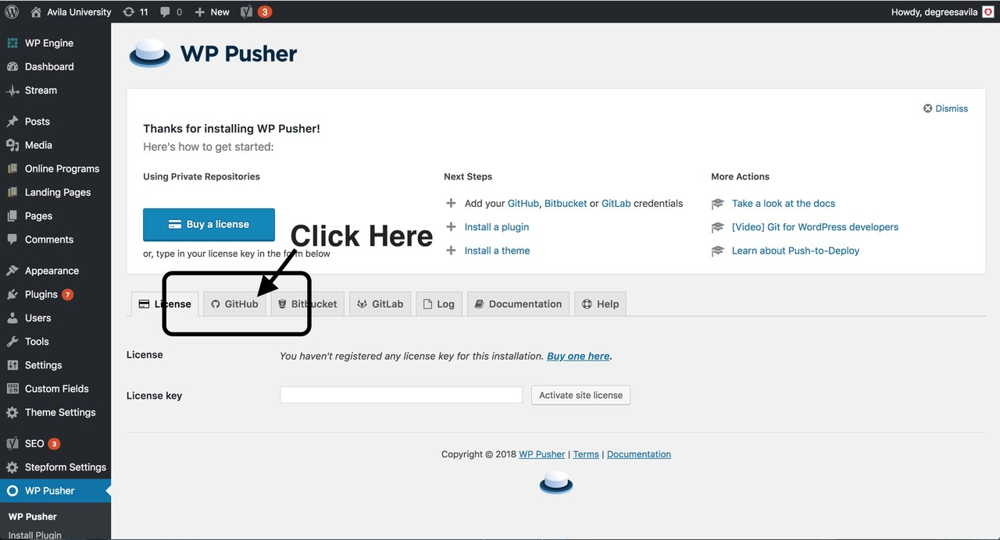
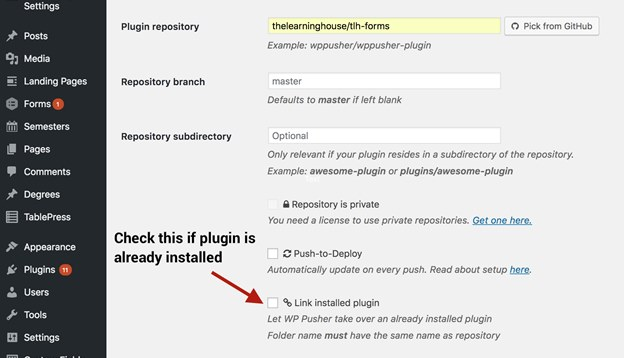

New Forms
Steps
1. Create form template in Repo
- Consists of a
.jsfile and a.vuefile - Template boilerplates are in the repo inside the
.TEMPLATESdirectory - Uses Vue components
- marketing-forms repo
IMPORTANT
The filenames must match the name of their parent directory
2. Choose the template In Wordpress Admin
- Can be set from specific page or the TlhForms Admin where batch updating can take place
- The list of availble templates pulled via Github API
3. Add the form to the page
- Put
<div id="tlh-form"></div>where form should be rendered - Can also use the WordPress shortcode
[tlh-form] - Form Setup Example
WordPress Plugin
1. Setup WPPusher
Install WP Pusher Plugin
Obtain Github Token For WP Pusher 
Using WP Pusher - Add our TLH Forms plugin 
This allows plugin updates to be pulled from the WordPress Admin
2. Configure Settings
- Info needed obtained from Forms Admin
- Configure in TlhForms Admin - Example TlhForms Admin